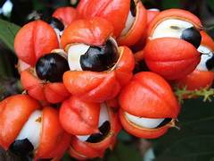
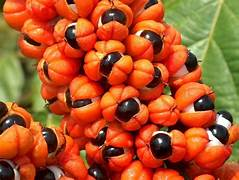
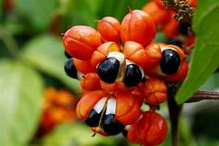

Origem
O guaraná é uma planta nativa da região amazônica, especialmente das áreas próximas ao baixo Rio Amazonas, entre os estados do Amazonas e Pará.
Seu nome foi dado pelo povo indígena Sateré-Mawé, o primeiro a cultivar e utilizar a planta de forma sistemática.
Neste contexto, o guaraná possui um profundo significado espiritual e medicinal — considerado um presente dos deuses, usado em rituais, como fonte de energia, e remédio natural.
A domesticação do guaraná pelos Sateré-Mawé é considerada uma das mais antigas práticas agrícolas da Amazônia, e até hoje essa etnia é reconhecida como guardiã dessa cultura.
Plantio
O cultivo do guaraná contribui diretamente para a conservação da floresta e o fortalecimento da agricultura familiar. A Empresa Brasileira de Pesquisa Agropecuária (Embrapa) tem desempenhado papel fundamental nesse processo, desenvolvendo cultivares resistentes a doenças como a antracnose e promovendo boas práticas agrícolas que garantem produtividade e sustentabilidade.
Segundo o pesquisador da Embrapa Amazônia Ocidental, o Programa de Melhoramento Genético do Guaranazeiro trouxe avanços expressivos para a cultura do guaraná no Brasil, especialmente com o desenvolvimento de cultivares mais produtivas e resistentes.
Ele destaca que a produtividade, que antes era de aproximadamente 40 kg de amêndoas secas por hectare, alcançou cerca de uma tonelada por hectare, representando um salto de até 10 vezes em relação aos sistemas tradicionais.
Essa transformação foi possível graças à seleção de plantas com alta produtividade — algumas chegando a produzir até 2,3 kg — e à adoção da propagação vegetativa, que substituiu o antigo método de plantio por sementes.
Com isso, o tempo até o início da produção foi reduzido e a incidência de doenças como a antracnose, que antes afetava até metade das plantas, foi drasticamente diminuída.
Além disso, o uso de cultivares resistentes contribui para a redução de agrotóxicos, tornando o cultivo mais sustentável.
Firmino ressalta que o guaranazeiro exige atenção contínua e a produção pode iniciar já no segundo ano após o plantio.
Ele observa que essas plantas se mantêm produtivas por mais de 20 anos, o que reforça sua viabilidade econômica e ambiental.
Para orientar os produtores, a Embrapa disponibiliza um sistema de produção específico para o guaranazeiro, acessível no site da instituição.
Algumas condições essenciais para o bom desenvolvimento da planta:

Floração
A floração do guaranazeiro (Paullinia cupana) ocorre principalmente entre agosto e novembro, caracterizada por pequenas flores brancas e aromáticas.
O pico da floração acontece no verão amazônico (período seco), resultando na colheita dos frutos de novembro a março, quando as cápsulas vermelhas se abrem, expondo a semente preta.
Principais características da floração:
Propriedades medicinais e nutricionais
As sementes do guaraná são ricas em compostos bioativos, com destaque para:
Essas substâncias promovem diversos benefícios à saúde, como:
segundo estudos da Embrapa e de instituições como a Fiocruz.
Nutriente
Quantidade (100g)
Energia
70-90 kcal
Carboidratos
15-20g
Proteínas
2-3g
Gorduras totais
0,5-1g
Fibras alimentares
2-4g
Cafeína
2,5g (sementes)
Cálcio
20-40mg
Ferro
1-2mg
Magnésio
30-50mg
Potássio
200-300mg
Vitamina C
2-5mg

Benefícios
A nutricionista Bárbara Plentz Yado explica que o guaraná em pó natural pode ser um aliado em dietas voltadas ao emagrecimento e à melhora do desempenho físico, graças às suas propriedades energéticas, antioxidantes e termogênicas.
A dose recomendada varia entre 2 a 3 g por dia, mas ela reforça a importância de consultar um profissional de saúde antes de iniciar o uso.
O pó pode ser diluído em água, sucos, vitaminas ou shakes, sendo mais eficaz quando consumido pela manhã ou antes dos treinos. “Seu leve efeito termogênico contribui para o aumento do gasto energético, enquanto o efeito sacietógeno auxilia no controle do apetite”, destaca Bárbara.
Ela ressalta que os benefícios só são percebidos quando o consumo está alinhado a uma alimentação equilibrada e a um estilo de vida saudável.

Receitas
1-Guaraná da Amazônia Tradicional:
Tempo de preparo: 5 minutos
Rendimento: 2 copos grandes
Ingredientes:
Modo de preparo:
2-Guaraná da Amazônia de banana:
Tempo de preparo: 15 minutos
Rendimento: 2 copos grandes
Ingredientes:
Modo de preparo:
3-Pastel Assado de Guaraná:
Tempo de preparo: 40 minutos
Rendimento: 20 a 30 pastéis
Ingredientes:
Modo de preparo:
Bibliografia
Origem; Plantio; Floração; Propriedades medicinais e nutricionais; Benefícios:
https://revistacasaejardim.globo.com/paisagismo/noticia/2025/10/guarana-paullinia-cupana.ghtml
Receita 1 e 2:
https://www.mahta.bio/blogs/mahta/8-receitas-de-guarana-da-amazonia-para-voce-fazer?srsltid=AfmBOopd0NNyb3r2WJ8dRgjrW-krXwHG_8T6uqIZRH0Qn3AH7IB6cxow
Receita 3:
https://www.youtube.com/watch?v=Wig6JxpmbFM&t=1s
Heloísa dos Santos Seara 2026 -©Todos os direitos reservados
Trabalho acadêmico sem fins lucrativos